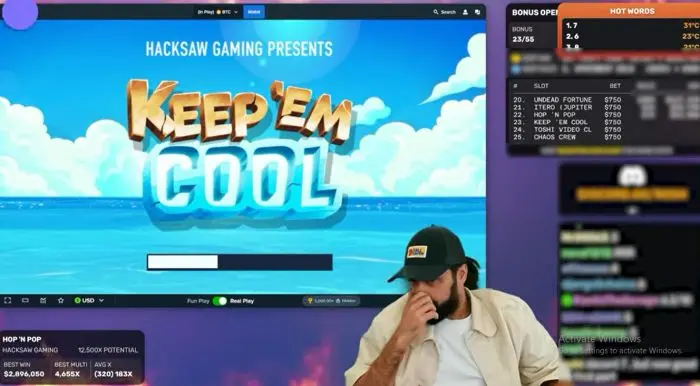

Roshtein-Vermögenswerte – so viel verdient Casino-Streamer Roshtein

Roshtein ist ein berühmter Casino-Streamer, der die Online-Glücksspielwelt im Sturm erobert hat. Was er erreicht hat, davon können die meisten Spieler nur träumen. Er hat nicht nur das Spielen in Casinos zu seinem Beruf gemacht. Es gelang ihm auch, ein schönes Vermögen anzuhäufen und viele fragen sich, wie hoch das Roshtein-Vermögenswerte ist. Roshtein hat in den letzten Jahren eine große Fangemeinde auf Social Media und Streaming-Plattformen wie Twitch gewonnen. Dort ist er fast täglich anzutreffen, um seine Spielsessions zu streamen und die nötigen Kommentare abzugeben. Die Zuschauer lieben ihn nicht nur dafür, dass er ein erfolgreicher Spieler ist. Seine extravagante Persönlichkeit und sein aggressiver Spielstil hat ihn zu einem bekannten Namen in der Online-Glücksspiel-Community gemacht haben.
Wer ist Roshtein überhaupt?
Roshtein wurde geboren in1988 in Stockholm, Schweden und Sein richtiger Name ist Ishmael Swartz. Neben der schwedischen Staatsangehörigkeit besitzt er auch einen türkischen und einen deutschen Pass. Schon früh war er von der Welt der Video-Slots fasziniert und 2016 streamte er seine erste Session über die Streaming-Plattform Twitch. Zu dieser Zeit gab es nur wenige Casino-Streamer. Aber sie empfingen Roshtein mit offenen Armen und ermutigten ihn, seiner Leidenschaft nachzugehen. Es gab noch keine großartigen Beispiele, da alles noch in den Kinderschuhen steckte. Roshtein entpuppte sich jedoch als Draufgänger. Sondern schaffte es immer mehr Zuschauer mit seinen streamen zu fesseln.
Roshteins Privatleben
Roshtein ist dafür bekannt, sein Privatleben aus der Öffentlichkeit zu halten. Infolgedessen haben seine Fans nur begrenztes Wissen über seine Familie, Beziehungen und andere persönliche Details. Trotzdem versuchte GBC Time, exklusive Informationen über Ismael Swartz, den Mann hinter Roshteins Persönlichkeit, zu sammeln. Ismael Swartz hat sein genaues Geburtsdatum nie verraten, aber er wurde 1988 geboren und ist somit in den Dreißigern. Details über sein Liebesleben und seine Partnerin sind der Öffentlichkeit ebenfalls nicht zugänglich. Während Gerüchte darauf hindeuten, dass er ledig ist und keine Kinder hat, ist es wichtig zu beachten, dass Prominente ihre Fans oft überraschen können. In der heutigen Zeit sind Social-Media-Profile der perfekte Weg, um mehr über eine Person zu erfahren. Der Twitter-Account von Roshtein ist seit Februar 2016 aktiv. Normalerweise teilt er Informationen über bevorstehende Streams und wichtige Ankündigungen. Er hat kürzlich einen Beitrag über seine Zusammenarbeit mit dem kanadischen Rapper Drake geteilt, der dafür bekannt ist, offen mit seinen Hobbys umzugehen.
Bessere Ausstattung und separater Raum zum Streamen
Roshetin hatte einen Pass, als er Video-Slots spielte und streamte, und wusste, dass es Fehler gab, um zwei Dinge zu vermitteln. Je mehr Geräte Sie herstellen, desto professioneller werden Ihre Streams. Er suchte nach der richtigen Ausrüstung und experimentierte mit verschiedenen Arten des Streamings. Der eigentliche Erfolg begann auf der Streaming-Plattform Twitch. Er beschränkte sich hauptsächlich auf das Streamen von Video-Slot-Sessions.
Riesige Gewinnsummen
Charakteristisch für seine Streams und sein Spiel ist, dass er mit hohen Einsätzen spielt und dadurch auch riesige Gewinne einfährt. Unten sind die fünf höchsten Beträge, die er je gewonnen hat.
| Wanted Dead Or Alive Wild | $18.750.000 | 1 Juli 2022 |
| Wanted Dead Or Alive Wild | $17.550.000 | 30 März 2022 |
| Wanted Dead Or Alive Wild | $16.673.250 | 9 Februar 2022 |
| Gladiator Legends | $15.000.000 | 19 August 2022 |
| Wanted Dead Or Alive Wild | $14.715.150 | 1 September 2022 |
Die Glücksspielwelt ist immens und wer alles streamen will, wird das nie alleine schaffen. Also traf er eine wohlüberlegte Wahl. Seine Persönlichkeit, die Art und Weise, wie er mit seinen Zuschauern interagierte. Die riesigen Beträge, die er beim Spielen setzte, machten fast jede Spielsitzung zu einem kleinen Spektakel. Roshtein ist heute einer der meistdiskutierten und erfolgreichsten Casino-Streamer.
Roshtein-Vermögenswerte: Wie viel Geld hat er zusammen gespielt?
Verschiedene Quellen schätzen Roshteins Vermögen zwischen 117 und 140 Millionen US-Dollar . Dazu gehören seine Einnahmen aus seinen Casino-Streams, Affiliate-Marketing-Deals und anderen geschäftlichen Unternehmungen. Nachfolgend finden Sie eine Übersicht über eine Reihe besonderer Roshtein-Erfolge
| Längster Stream | 25:07:00 19 | 20 August 2021 |
| Höchste Auszahlung | $16.000.000 | 30 März 2022 |
| Höchstes Guthaben | $20.609.883 | 1 Juli 2022 |
| Größter Multiplikator: | x35.581 | 23 Oktober 2022 |
| Größter Verlust | $7.500.000 | 31 Oktober 2021 |
| Größter Gewinn | $18.750.000 | 1 Juli 2022 |
Eine der Haupteinnahmequellen von das Roshtein-Vermögenswerte sind seine Casino-Streams. Er streamt seine Gaming-Sessions auf Twitch, wo er mittlerweile mehr als eine Million Follower hat. Diese Streams werden von verschiedenen Online-Casinos gesponsert, die ihn dafür bezahlen, ihre Spiele zu spielen und ihre Marke zu fördern. Es wird berichtet, dass dass Roshteins-Vermögenswerte um etwa 20.000 bis 50.000 Euro pro Monat zunimmts. Aufgrund neuer Gesetze wurde Roshtein jedoch seit 2022 nicht mehr im Streaming-Dienst von Twitch gesehen. Die Casinos, in denen Roshtein spielte, waren nicht reguliert.
Roshtein-Vermögenswerte: Viele Affiliate-Einnahmen
Zusätzlich zu seinen Casino-Streams verdient Roshtein auch Geld mit Affiliate-Marketing-Deals. Er bewirbt verschiedene Online-Casinos. Er verdient eine Provision für jeden Spieler, der sich über seinen Link anmeldet. Dies kann eine lukrative Einnahmequelle für einen Streamer wie Roshtein sein. Übrigens war es ein solcher Link, der dazu führte, dass sein Konto auf Twitch gesperrt wurde. Derzeit gibt es nur eine begrenzte Anzahl alter Videos zum Ansehen. Neben seinen Streaming- und Affiliate-Marketing-Aktivitäten hat Roshtein auch andere geschäftliche Unternehmungen, die zu seinem Nettovermögen beitragen. Nachdem Twitch Roshteins Account gesperrt hatte, musste er sich nach einer anderen Plattform umsehen. Er landete schließlich bei Kick.com und seine Streams können nun dort verfolgt werden. Das Casino, in dem Roshtein gerade spielt, ist das Stake.com Casino . Er hat seine eigene Warenlinie auf den Markt gebracht, darunter T-Shirts, Hoodies und Accessoires. Er veranstaltet auch Live-Events und Meet-and-Greets mit seinen Fans, die erhebliche Einnahmen generieren können. Schätzungen zufolge können seine monatlichen Einnahmen allein aus seinen Casino-Streams zwischen 20.000 und 50.000 US-Dollar liegen. Wenn Sie seine Einnahmen aus Affiliate-Marketing, Merchandise-Verkäufen und Live-Events hinzurechnen, kann sein Jahreseinkommen leicht 1 Million US-Dollar übersteigen.
Roshtein weist jedoch kein tadelloses Verhalten auf
Neben den Erfolgsgeschichten ist der Name Roshtein auch mit einigen Skandalen verbunden. Es gab Gerüchte über seine Integrität und die Echtheit des Geldes, mit dem er während seiner Spielsitzungen spielt. Es ist immer schwer, an so große Gewinne zu glauben, die manchmal mehr als 1 Million Euro erreichten. Die ersten Zweifel an Roshteins Spiel kamen beim Spielen im N1 Casino auf. Während er zur Demoversion lief, änderte sich sein Einzahlungsguthaben, das tatsächlich €5.000,- betrug, nicht. Seine Anhänger vermuteten, dass all das Geld und die Drehungen gefälscht waren, nur um für das N1-Casino zu werben. Bemerkenswerterweise hat Roshtein diesen Gerüchten nie widersprochen oder sie bestätigt.
Betrug oder nicht
Hohe Einsätze in Kombination mit hohen Multiplikatoren führen zu riesigen Gewinnen. Unten sind die fünf höchsten Multiplikatoren aufgeführt, die Roshtein gewonnen hat
| El Paso | 35.581x | €106.744 |
| San Quentin xWays | 23.364x | $93.454 |
| Barn Festival | 20.000x | $10.000.000 |
| Tombstone Rip | 18.236x | $54.707 |
| Mental | 15.396x | $153.958 |
Ein weiterer Grund für Benutzer zu glauben, ist die Tatsache, dass der Streamer während seiner Spielsitzungen nie Geld verloren hat. Und jeder, der regelmäßig Video-Slots spielt, wird sicherlich die Augenbrauen hochziehen. Seine Anhänger diskutierten diese Tatsache und teilten ihre Gedanken auf Reddit. Trotz aller Gerüchte und Skandale rund um den Streamer wurde er nie offiziell angeklagt. Roshtein ist ohne Zweifel einer der erfolgreichsten und beliebtesten Casino-Streamer der Welt. Das Roshtein-Vermögenswerte und sein Einkommen spiegeln dies wider. Mit seiner charismatischen Persönlichkeit und seinen beeindruckenden Glücksspielfähigkeiten hat er eine treue Fangemeinde aufgebaut, die sich eifrig einschaltet, um ihn spielen zu sehen.